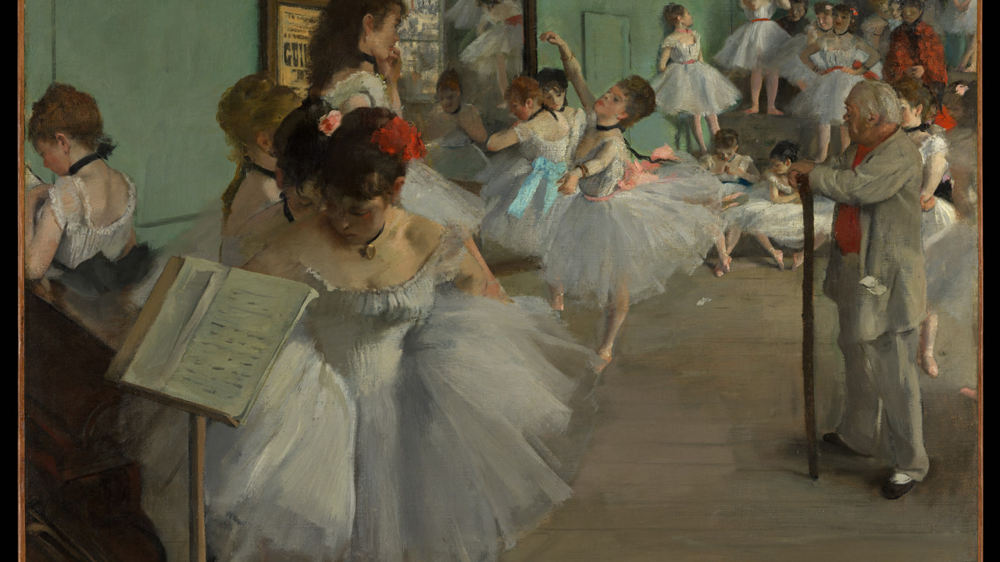

PLANO 01 / APERTURA
Tres planos. Un pulso.
Reel de motion graphics con entrada tipográfica, corte en el pico y transición medida. El tiempo es la composición.
PLANO 02 / DETALLE
El corte llega en el pico.
Ritmo, no acumulación. Tres planos con una intención cada uno.
PLANO 03 / CIERRE
Un pulso.
La transición se mide; el tiempo es la composición.